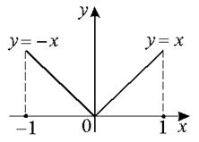

Геометрический смысл теоремы Ролля
Если функция удовлетворяет условию теоремы Ролля, то в
некоторой точке отрезка касательная к графику параллельна оси .
Теорема Ролля позволяет узнать об обращении производной в ноль
без ее вычислений.
Если  такова, что производная
существует не во всех точках внутри отрезка
такова, что производная
существует не во всех точках внутри отрезка  ,
то может не оказаться такой точки
,
то может не оказаться такой точки  , в которой обращается в ноль.
, в которой обращается в ноль.
такова, что производная
существует не во всех точках внутри отрезка ,
то может не оказаться такой точки , в которой обращается в ноль.
 ,
,, .
не существует (по определению).